OPEN CABINET // STATIC WEB EXPERIMENTS
Small pages.
Unreasonable
ambition.
A growing shelf of interactive websites, speculative interfaces, and polished one-off ideas. Every page is built to be explored.
EXPERIMENTS
001 THE COLLECTION
Newest first
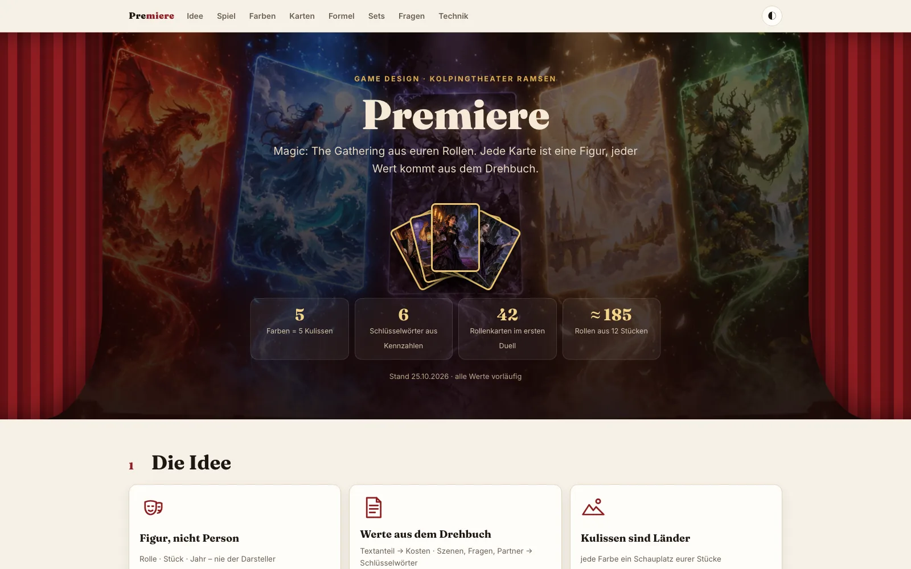
GAME DESIGN / TCG / 2026
Premiere · Theater-Sammelkartenspiel
A game design plan for a Magic-style trading card game made from the roles of an amateur theatre. Card costs and keywords are computed from the scripts, each colour is a set from one of the plays, and the page shows it with an animated sample turn, a booster opening, a script-to-card pipeline, a colour wheel, data charts and generated art.
- VANILLA JS
- SVG CHARTS
- WEB ANIMATIONS
- AI ART
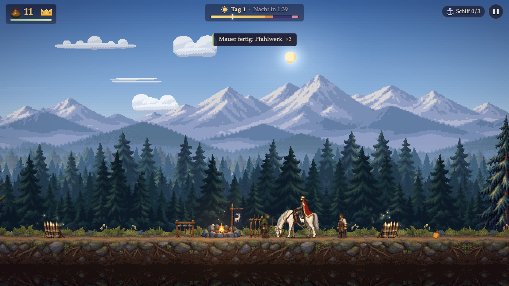
GAME / STRATEGY / 2026
Crownward · Die erste Insel
Ride through Morgenrand, recruit villagers, build defenses and survive the night. An original side-scrolling kingdom strategy game with generated pixel art, a day-and-night cycle, local two-player co-op, touch controls and browser saves.
- CANVAS 2D
- PIXEL ART
- LOCAL CO-OP
- WEB AUDIO
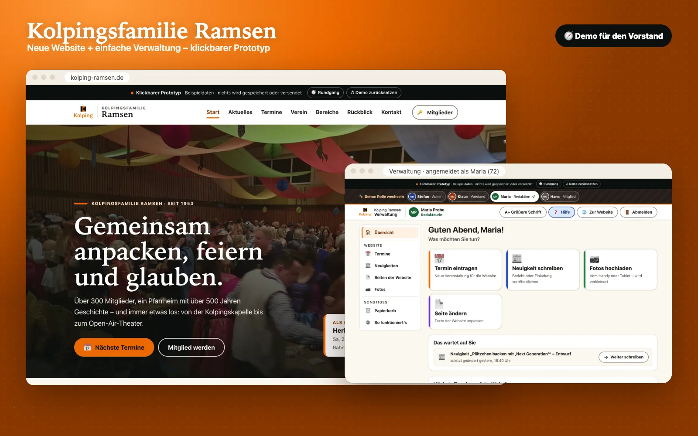
PROTOTYPE / CMS / 2026
Kolping Ramsen · Klick-Prototyp
A clickable relaunch prototype for a local Kolping association: a public site with events, calendar export and a photo review, plus a deliberately calm admin area for volunteers. Switch between four demo roles to see what an admin, the board, the editor and a member may do, from large-tile tasks and in-browser photo compression to a board file store, live meeting minutes and an audit log. A guided tour walks through it all.
- VANILLA JS
- ROLE-BASED ACCESS
- SENIOR-FRIENDLY UX
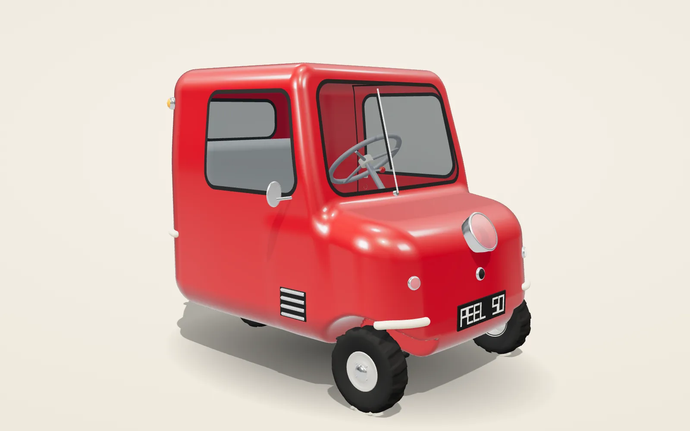
3D / AUTOMOTIVE / 2026
Peel P50 · 3D
The world's smallest production car, modelled entirely in code with no image generation: a signed-distance-field body meshed with surface nets, windows and the door seam cut along exact iso-lines, and parametric wheels, lamps, trim and cabin. Orbit it, switch between the factory paints and download the GLB.
- THREE.JS
- SDF + SURFACE NETS
- GLB
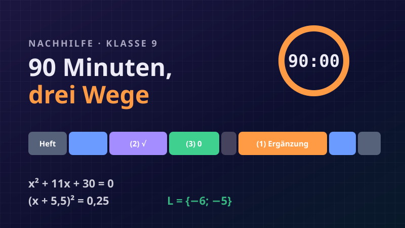
EDUCATION / NACHHILFE / 2026
Nachhilfe: 90 Minuten, drei Wege
A 90-minute tutoring plan for quadratic equations, matched to the student's notebook (completing the square, square roots, zero-product property): a live lesson timer that highlights the current phase, word-for-word prompts, notebook corrections, worked exercises with hidden solutions, a printable worksheet and deep links into the learning page.
- VANILLA JS
- LESSON TIMER
- PRINT CSS
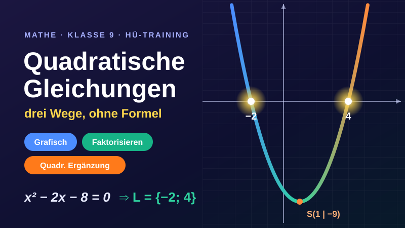
EDUCATION / MATHE KLASSE 9 / 2026
Quadratische Gleichungen: drei Wege, ohne Formel
A mobile-first German learning app for a grade-9 quiz: solve quadratic equations graphically, by factoring and by completing the square — with interactive parabola labs, an area model, step-by-step solutions, checked exercises, an endless trainer, two timed practice quizzes, a cheat sheet and a tutor's lesson guide.
- VANILLA JS
- SVG PLOTS
- MOBILE FIRST
- PRINT CSS
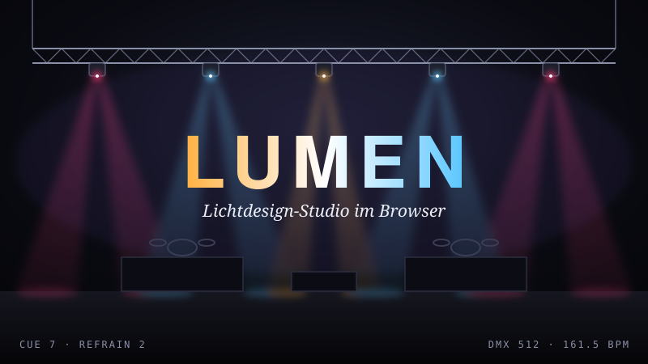
3D / LICHTDESIGN / 2026
LUMEN: Lichtdesign-Studio
A lighting console in the browser: 83 fixtures from moving heads to lasers, sparkulars, CO2 jets and flames, cues, executors and a beat-synced timeline, beams cutting through haze with bloom on a live 3D stage — and an epic demo show for a two-piece band (drums, vocals and piano) plus live touring band (bass, guitar, synth) with an automatic show camera, programmed hit for hit to a drum-heavy track at 164 BPM.
- THREE.JS
- BLOOM
- WEB AUDIO
- DMX
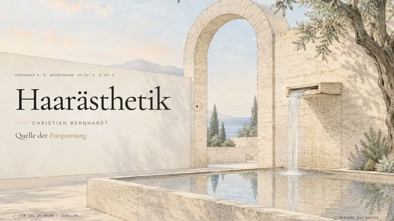
WEB DESIGN / REDESIGN CONCEPT / 2026
Haarästhetik · Quelle der Entspannung
A second, quieter redesign concept for Haarästhetik Christian Bernhardt: a fountain hero that paints itself from sketch to pastel, a day in the salon told through light, and interactive chapters with AI-generated imagery.
- WEBGL
- SCROLL EFFECTS
- AI IMAGERY
- VANILLA JS
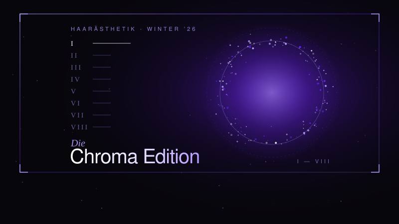
WEB DESIGN / REDESIGN CONCEPT / 2026
Haarästhetik · Die Chroma Edition
A futuristic redesign concept for the salon Haarästhetik Christian Bernhardt in Kirchheim an der Weinstraße, staged like the Shopify Editions Winter '26: eight chapters in obsidian and violet, scroll-driven effects and AI-generated imagery.
- SCROLL EFFECTS
- AI IMAGERY
- VANILLA JS
- RESPONSIVE
LITERATURE / NOVEL / 2026
Was der Berg behält: Roman vom Donnersberg
A full German historical novel with a veil of low fantasy: Celts on the Donnersberg, 54–51 BC, a glassmaker whose deaf ear sings before storms, a courteous Roman prefect who has already sold her people, and the real riddle of why the great hillfort was abandoned. Prologue, 23 chapters, epilogue and an afterword on what is fact and fiction.
- 113K WORDS
- READER
- AI ILLUSTRATION
- VANILLA JS
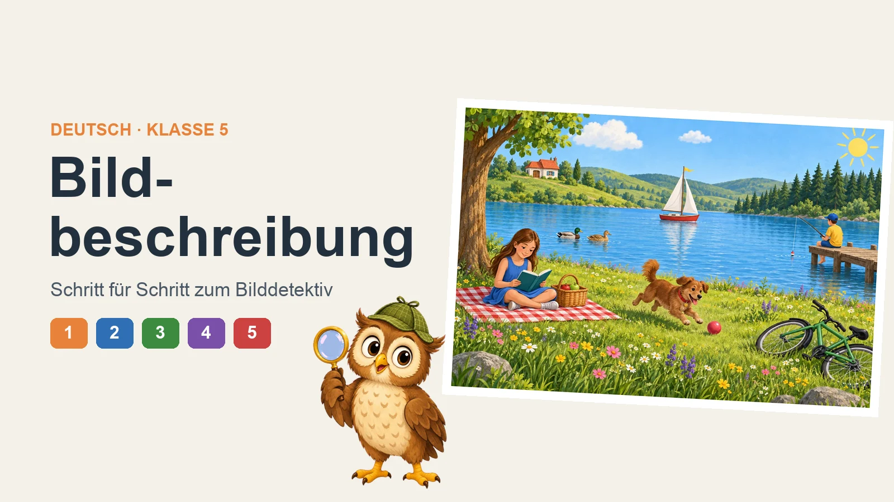
EDUCATION / TEACHING UNIT / 2026
Bildbeschreibung: Schritt für Schritt zum Bilddetektiv
A complete German grade-5 unit on describing pictures: lesson plan, 14 detailed lessons, 18 printable worksheets with solutions, homework checks, a method kit, ten interactive learning games, a projector mode and a full class test — guided by Lupo, the detective owl.
- PRINT CSS
- AI ILLUSTRATION
- VANILLA JS
- A4 WORKSHEETS
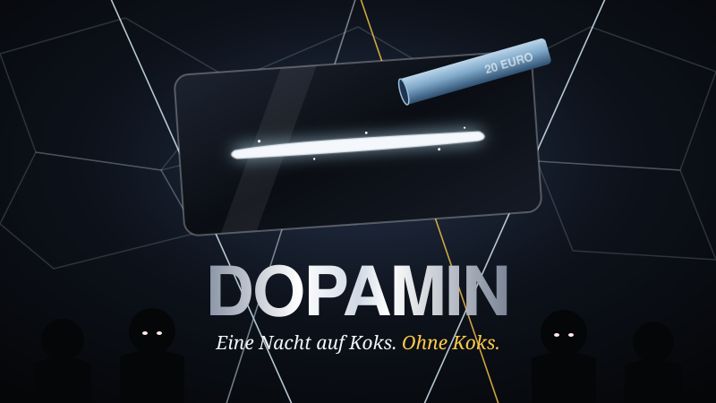
AUDIOVISUAL / SIMULATION / 2026
DOPAMIN: Eine Nacht auf Koks
Draw the line, then chase it: a kick, shrinking highs, the same question again and again, a heart that keeps stacking the bill — plus voice messages you'll regret on Sunday and a recap of every line you took.
- WEBGL
- WEB AUDIO
- PHARMACOKINETICS
- SAFER USE
AUDIOVISUAL / SIMULATION / 2026
SEROTONIN: Eine Nacht auf XTC
Swallow a pill, then live through wait, come-up, peak, plateau, comedown and the Tuesday after — shader visuals, generative techno, a body HUD, synapse animations and a recap of your own choices.
- WEBGL
- WEB AUDIO
- CANVAS
- SAFER USE
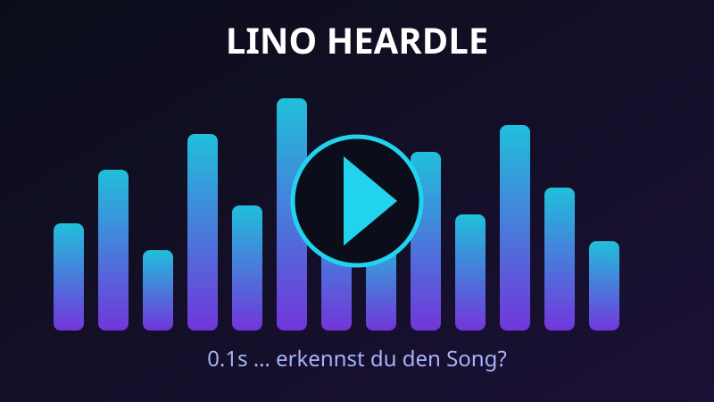
MUSIC GAME / DAILY QUIZ / 2026
Lino Heardle: Erkenne den Song
Five Lostboi Lino songs a day, starting from a 0.1-second snippet that grows with every skip or wrong guess — guess early for max points.
- VANILLA JS
- WEB AUDIO
- DAILY SEED
- OFFLINE-READY
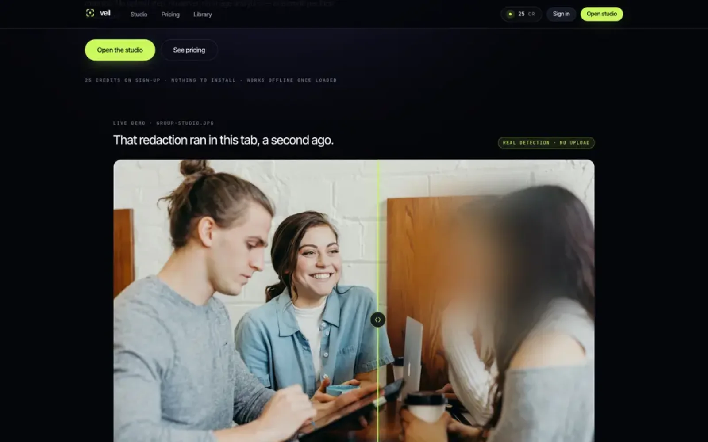
PRIVACY TOOL / ON-DEVICE ML / 2026
Veil: Face redaction that never uploads
Two BlazeFace models run on your own machine to find every face, then blur, mosaic, ink or glyph them out and export at full resolution — metered at one credit per redacted face.
- REACT
- MEDIAPIPE
- WASM
- CANVAS
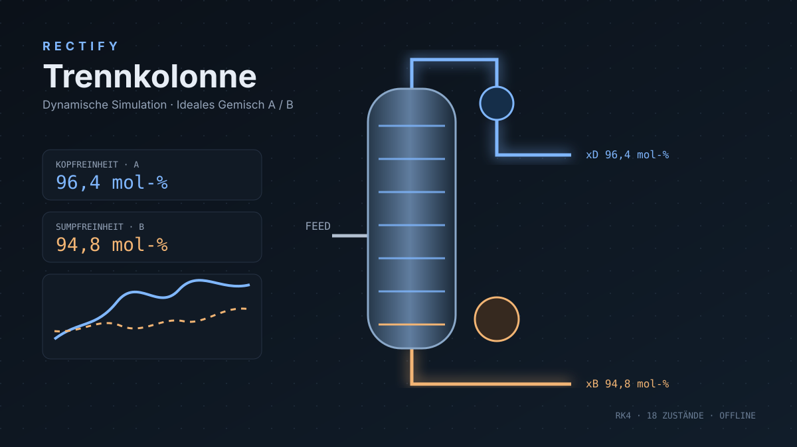
PROCESS ENGINEERING / SIMULATION / 2026
RECTIFY: Trennkolonnen-Simulator
A dynamic distillation lab with real-fluid properties, NRTL thermodynamics, coupled energy and material balances, eight experiments, and a guide to the model's assumptions.
- REAL FLUIDS
- NRTL
- 8 EXPERIMENTS
- LOCAL COMPUTE

Protected.
PRODUCT REDESIGN / DISCORD / 2026
Xenon: Your community. Protected.
A professional Xenon redesign with clear backup and sync illustrations, an interactive backup walkthrough, and the complete homepage content.
- REACT
- INTERACTIVE
- RESPONSIVE
- DARK / LIGHT
PRODUCT REDESIGN / INTERACTIVE / 2026
ShareX: Capture without limits
A real-time 3D capture playground in the original ShareX colors, with animated light effects, region selection, and downloadable PNG captures.
- REACT
- THREE.JS
- INTERACTIVE
- RESPONSIVE
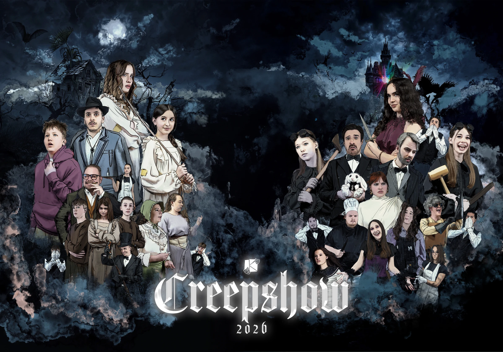
THEATER / PRODUCT PROTOTYPE / 2026
Creepshow — Probenplan
A clickable planning prototype for rehearsals, attendance, reminders, polls, statistics, and calendar coordination at Kolpingtheater Ramsen.
- REACT
- RESPONSIVE
- INTERACTIVE
- ACCESSIBLE
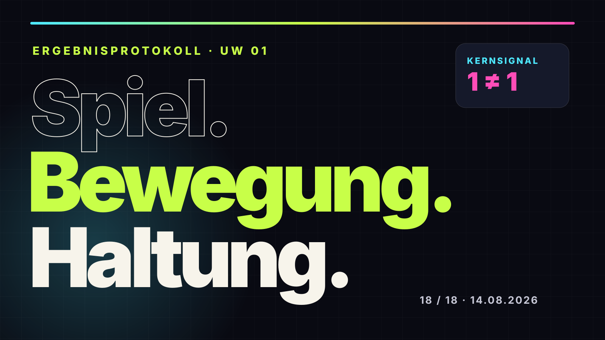
EDUCATION / EDITORIAL / 2026
Spiel. Bewegung. Haltung.
A gloriously overbuilt, source-labeled lesson report about movement education, role-model behavior, safety, participation, and the difference between sport and movement.
- VANILLA JS
- RESPONSIVE
- PRINT CSS
- ACCESSIBLE
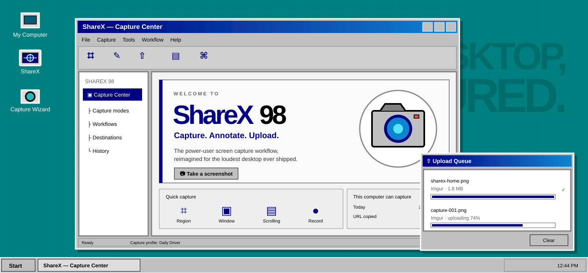
OPERATING SYSTEM / INTERACTIVE / 2026
ShareX — Windows 98 Edition
A complete desktop simulation where ShareX lives inside draggable windows, capture wizards, upload queues, Start menus, and unapologetically chunky pixels.
- WIN98 UI
- VANILLA JS
- INTERACTIVE
- RESPONSIVE
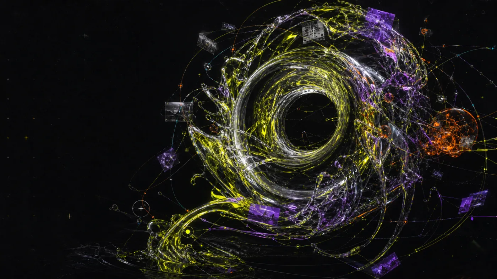
EDITORIAL REDESIGN / IMAGEGEN / 2026
ShareX — Afterimage Lab
A bio-digital editorial redesign where capture workflows bloom through original imagegen artwork, reactive specimens, and luminous motion.
- IMAGEGEN
- THREE.JS
- WEBGL
- RESPONSIVE
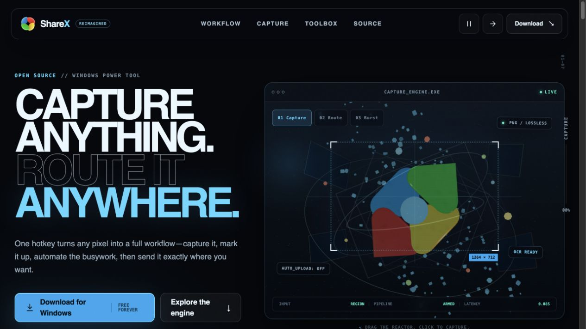
PRODUCT REDESIGN / THREE.JS / 2026
ShareX — The Capture Engine
A cinematic, interactive reinvention of ShareX where every capture becomes a kinetic workflow reactor.
- THREE.JS
- WEBGL
- VANILLA JS
- RESPONSIVE